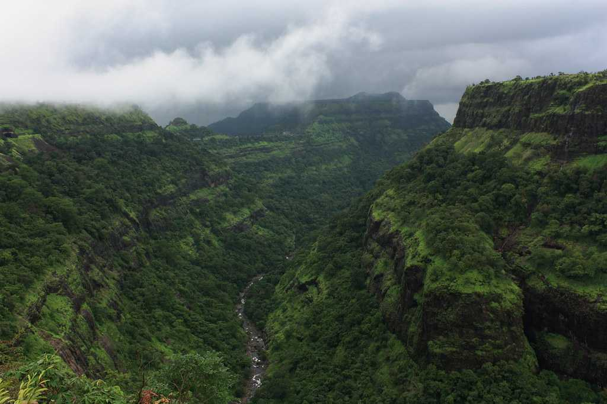
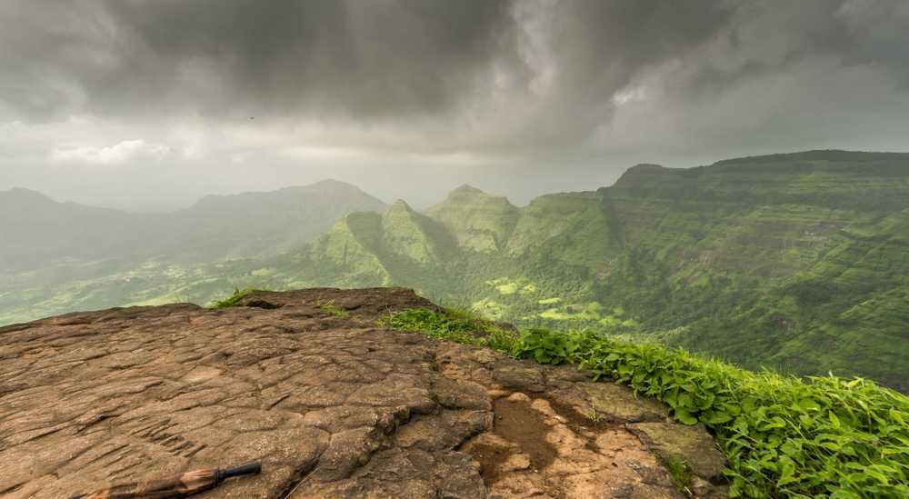
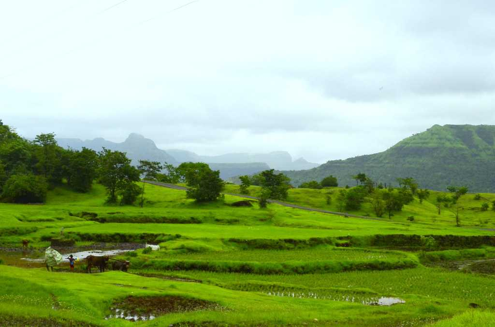
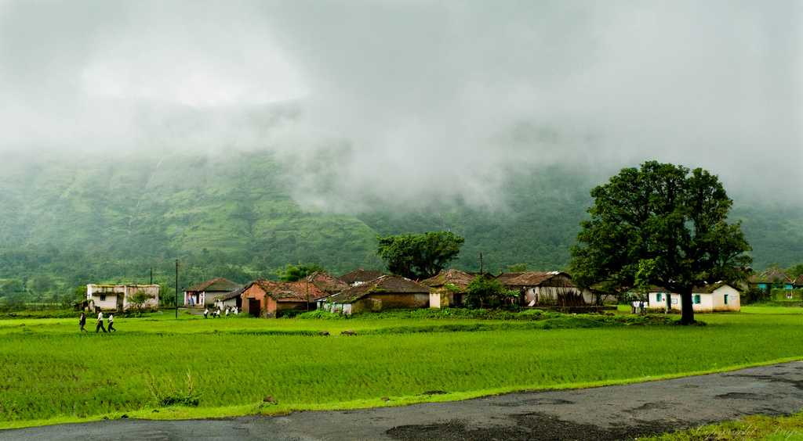
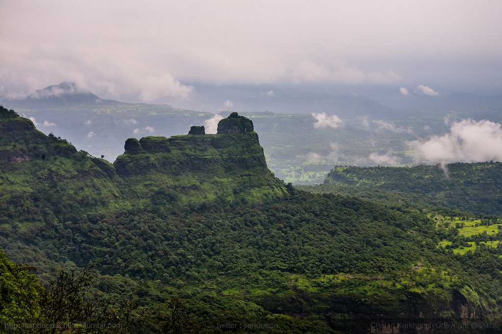

Ajanta and Ellora caves, considered to be one of the finest examples of ancient rock-cut caves, are located near Aurangabad in Maharashtra, India. Ajanta and Ellora caves complex is adorned with beautiful sculptures, paintings, and frescoes and include Buddhist monasteries, Hindu and Jain temples.
Mahabaleshwar is a hill station located in the Western Ghats, in Satara district of Maharashtra. Apart from its strawberries, Mahabaleshwar is also well known for its numerous rivers, magnificent cascades and majestic peaks. It is among the most sought after weekend getaways from Pune & Mumbai, located about 120km south-west of Pune and 285km from Mumbai.
Located at a distance of 122 Km from Nasik in the Ahmednagar district of Maharashtra, Shirdi is the home of Sai Baba. It is believed that Sai Baba arrived at Shirdi in 1858 and spent 60 years of his life here until he attained salvation in 1918. Sai Baba is popularly known as the 'child of God', as he always spread the message of universal brotherhood.
Mumbai, the capital city of the Indian state of Maharashtra, is a spectacular paradox of chaos and hope, glamour and squalor, modernity and tradition. Famously known as the City of Dreams, Mumbai – formerly known as Bombay - Mumbai is a beautifully blended melting pot of cultures and lifestyles.
Situated in the Sahyadri range of the Western Ghats close to Pune and Mumbai, Lonavala is the most visited hill station in Maharashtra and the place to be during monsoons. With lots of waterfalls, lakes and hills around, it is a popular destination for camping, trekking and other adventure sports.

Khandala is a popular hill station in Maharashtra, perched on the foothills of Sahyadri in the Western Ghats. Khandala provides for a perfect weekend respite for the Mumbai population, with its scenic valleys, grassy hills, serene lakes and misty waterfalls.
Nasik is a religious Hindu city, host to the Kumbh Mela every 12 years. It also makes for a perfect wine tasting destination. Nashik (Nasik), named after a relic associated with Ramayana, is a city in Maharashtra located on the banks of river Godavari. Nashik plays host to the famous Kumbh Mela every 12 years.
Pune is a bustling metropolis of Maharashtra, ranked number one in India in the ease of living. Often referred to as the Oxford of the East, it is a hub of diverse people and activities and is in rapidly growing into one of the top metropolitan cities in the country.

Nestled amidst the Sahyadri range on the Western Ghats, Matheran is a cosy little hill station that stands at an elevation of 2600 feet above sea level, and is just 100 kilometres away from Mumbai, making it the perfect weekend getaway.

Raigad, is a historically rich district is situated in the Konkan region of Maharashtra. Located at 2,851mts, it is surrounded by Mumbai Harbour, Thane, Pune, Ratnagiri and the Arabian Sea.

Amboli lies in the Sahyadri hills in the Sindhudurg district of Maharashtra. It is the last hill station of Maharashtra before the plains of Goa begin and is a relatively unexplored one.

Bhimashankar, located about 100 km from Pune and 223 km from Mumbai, is a popular temple town. It is among one of the twelve traditional 'Jyotilingam' shrines of Lord Shiva in India.